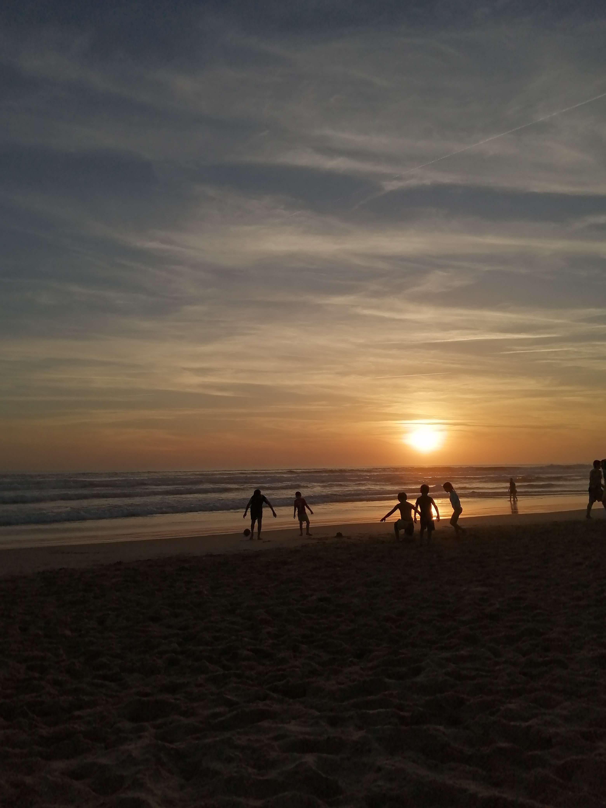
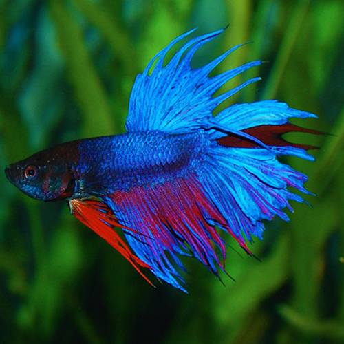

Por qué me gusta la vida marina
Desde pequeña, siempre me ha fascinado todo lo relacionado con el
mar y el océano. El ir a la playa, observar a los animales marinos
en los acuarios o simplemente aprender sobre ellos me encantaba. Con
el tiempo, empecé a investigar más sobre estos, mirar documentales y
leer sobre especies tanto comunes como raras. Me encanta hablar
cuando puedo sobre esta, ya que es tan misteriosa como bella. Cada
organismo sea grande o pequeño cumple con la función de mantener
vivo al planeta que aún nos queda bastante para descubrir.

¿Por qué hablar ahora sobre este?

Tenía varias ideas en la cabeza, pero como tengo un acuario en casa,
se me ocurrió hablar sobre la vida marina y sus animales. Ya que me
encanta dedicar mi tiempo a buscar más información sobre estos y
compartir con el resto de personas una de mis grandes pasiones. A su
vez, así doy visibilidad a los animales marinos que viven allí,
fomentando el cuidar más al planeta para que no desaparezcan estas
especies que son tan importantes para el mundo debido a que cada una
de ellas tiene un rol que hace que nuestro planeta esté más
equilibrado.